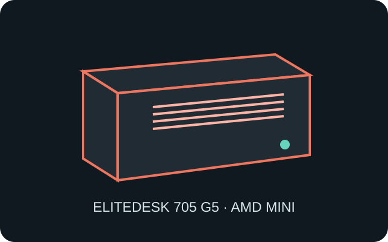

[ IDENTIFIED SYSTEM // AMD DESKTOP MINI ]
HP EliteDesk 705 G5 Desktop Mini
177 × 175 × 34 mm (W × D × H) compact AMD business system; verify product number and selected processor/power option.

MODEL TYPE: EliteDesk 705 G5 Desktop Mini, AMD platform. Do not confuse with EliteDesk 705 SFF or later 705 G6/G8 Mini revisions.
Specifications & fit
| Dimensions / type | 177 × 175 × 34 mm (W × D × H), Desktop Mini format. |
|---|---|
| Board / power | HP proprietary AMD system board; external HP adapter (65 W or 90 W according to processor/configuration). Not a standard mini-ITX motherboard or ATX PSU fit. |
| Drive bays | One M.2 storage socket and an optional 2.5-inch SATA bay with the correct drive carrier/harness; confirm the product’s storage options before populating both storage positions. |
| Expansion | No conventional PCIe card slot. WLAN uses its M.2 socket; the rear Flex I/O area is a factory-configured port option. |
| Thermal / maintenance compatibility | Processor TDP, heat sink, fan and adapter are configuration-dependent. Leave vent openings free, use the exact thermal module, unplug adapter before service, and avoid disturbing antenna cables. |
Compatibility & preservation notes
Board, power delivery, fan and port options differ from Intel EliteDesk and other HP Desktop Mini generations. Confirm system product number and spare-part identifier before repair.
- Do not substitute a larger chassis power supply; use the HP external adapter wattage prescribed for the exact system board.
- Reinstall drive carrier, cable and cover in original orientation; ensure the cooling path is clear after service.
Manufacturer specifications & service sources
- HP — EliteDesk 705 G5 Desktop Mini Maintenance and Service GuideManufacturer parts and maintenance procedures for the named AMD Desktop Mini.
- HP Support — EliteDesk 705 G5 Desktop Mini documentationManufacturer technical-document library; match the service guide to the system product number.